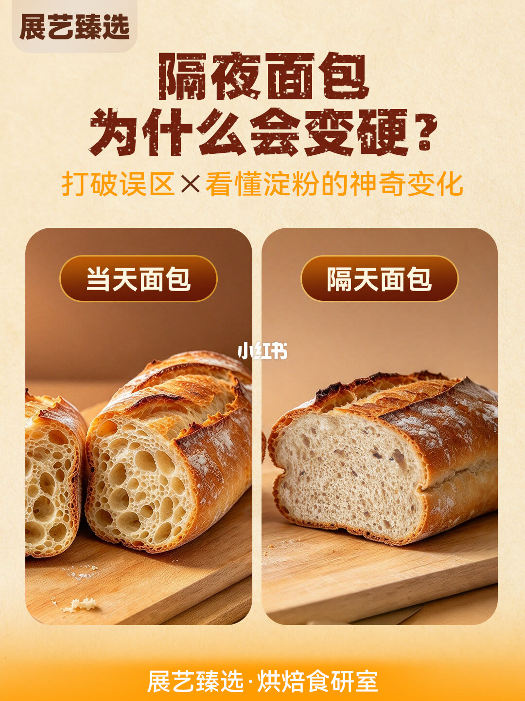
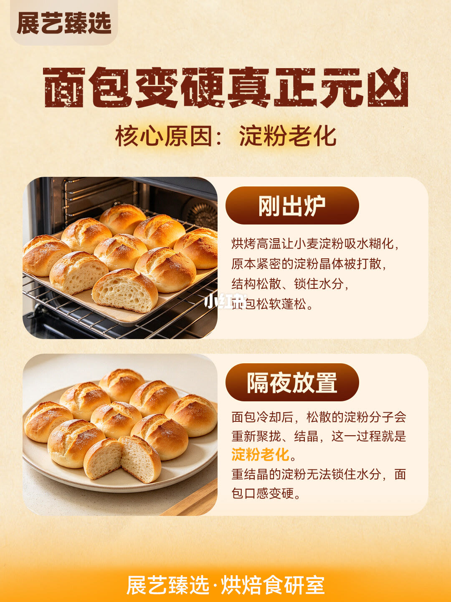
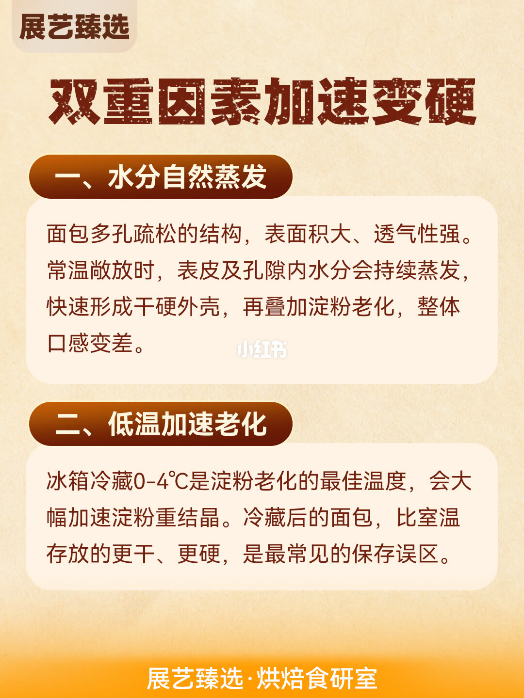
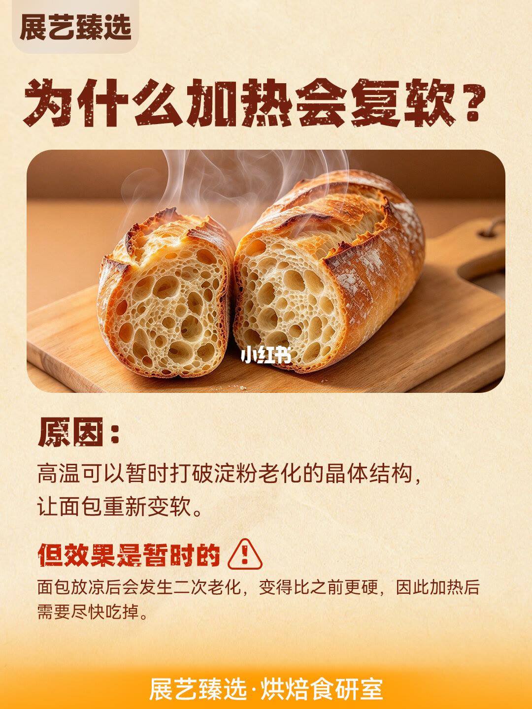
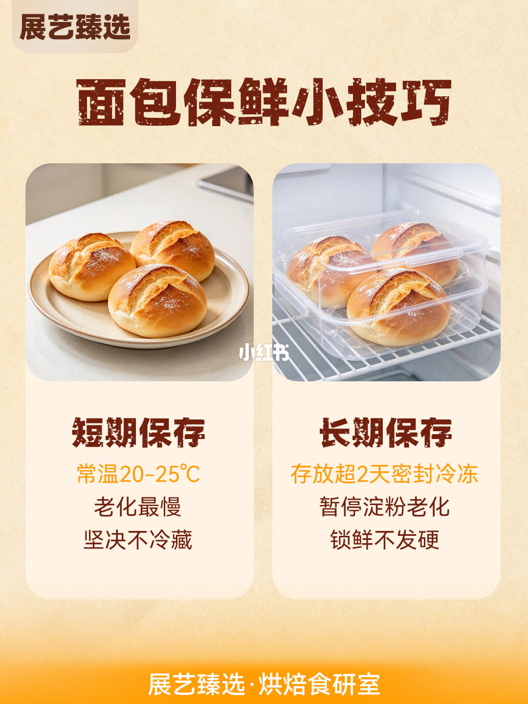

图文实录 · 小红书 · 展艺臻选
面包放一夜就变硬？看完这篇终于懂了
变硬的主因被写成淀粉老化，水分蒸发和冷藏会加快。加热只能暂时打散晶体，放凉会二次变硬。短期放 20–25°C，超过两天密封冷冻。
1/5
当天和隔天并排
标题「隔夜面包为什么会变硬」，副题「打破误区 × 看懂淀粉的神奇变化」。左边标当天面包，切面气孔大。右边标隔天面包，切面更密、更干。这一页没有解释机制。角落是展艺臻选烘焙食研室。

2/5
元凶是淀粉老化
刚出炉：烘烤高温让小麦淀粉吸水糊化，紧密的晶体被打散，结构松、锁住水，面包松软。隔夜：冷却后松散的淀粉分子重新聚拢、结晶，这就是淀粉老化。重结晶的淀粉锁不住水，口感变硬。

3/5
蒸发和冷藏一起加速
一、水分自然蒸发。面包多孔、表面积大、透气，室温敞着放，表皮和气孔里的水继续走，先结一层干硬壳，再叠上淀粉老化。二、低温加速老化。冷藏 0–4°C 被写成淀粉老化最快的温度区间，冷藏的面包比室温更干、更硬，并称为最常见的存放错误。

4/5
加热复软是暂时的
原因：高温可以暂时打破老化的晶体，面包重新变软。警告：效果是暂时的。放凉后二次老化，会比加热前更硬，所以加热后要尽快吃。

5/5
短期室温，长期冷冻
短期：常温 20–25°C，老化最慢，坚决不冷藏。长期：存放超过 2 天就密封冷冻，用来暂停淀粉老化，锁鲜不发硬。图上没有写解冻步骤。

汇总
不冷藏，加热后马上吃
第 2 页把变硬定义成淀粉重新结晶。第 3 页加上水分蒸发，并把 0–4°C 标成老化最快。第 4 页说加热只是暂时打散晶体，放凉会更硬。第 5 页的做法是 20–25°C 放短期，超过 2 天密封冷冻。没有不同面包的例外，也没有解冻时间。